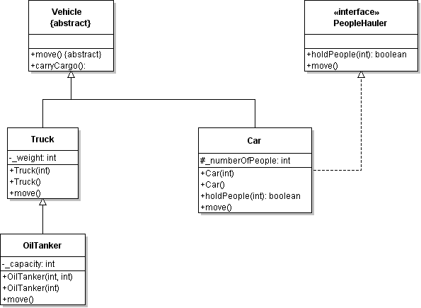

Canterbury QuestionBank
| Field | Value |
|---|---|
| ID | 618579 [created: 2013-05-28 20:41:58, author: marzieh (xmarzieh), avg difficulty: 0.0000] |
| Question | Which statement produces a compilation error? |
| A |
class A extends M implements I {// code was removed} class B extends N implements I {// code was removed} |
| B | class A extends M implements I, L, J {// code was removed} |
| *C* | class A extends M, N implements I {// code was removed} |
| D | class A extends M implements I {// code was removed} |
| Field | Value |
|---|---|
| ID | 618585 [created: 2013-05-28 20:45:47, author: marzieh (xmarzieh), avg difficulty: 0.0000] |
| Question |
Which of the following choices cannot be another constructor for academic class? class personnel{ String name, ID; char qualificationCode; public personnel(String n, String i, char q){ name = n; > qualificationCode = q; } public personnel (){ name = null; > qualificationCode = ' '; } } class academic extends personnel{ int teachingHours; public academic(String n, String i, char q, int t){ super(n,i,q); teachingHours = t; } public academic(int t){ super(null, null, ' '); teachingHours = t; } } |
| *A* |
public academic(){ super(null, null, ' '); this (0); } |
| B |
public academic(){ this (null, null, ' ', 0); } |
| C |
public academic(){ name = null; > qualificationCode = ' '; teachingHours = 0; } |
| D |
public academic(){ super(null, null, ' '); teachingHours = 0; } |
| Field | Value |
|---|---|
| ID | 618592 [created: 2013-05-28 20:49:07, author: marzieh (xmarzieh), avg difficulty: 0.0000] |
| Question |
Where in this code a compiler error is reported and why? 1 class pen{ 2 char colorCode; 3 } 4 public class penCounter { 5 public static void main(String[] arg){ 6 int numberOfPen; 7 pen myPen = new pen(); 8 System.out.println(myPen.colorCode + numberOfPen); 9 } 10} |
| *A* | line 8, numberOfPen has not been initialized. |
| B | line 8, colorCode has not been initialized. |
| C | line 6, numberOfPen has not been initialized. |
| D | line 2, colorCode has not been initialized. |
| Field | Value |
|---|---|
| ID | 618596 [created: 2013-05-28 20:50:30, author: marzieh (xmarzieh), avg difficulty: 0.0000] |
| Question |
What will be the outputted? class A{ int firstMethod(int input){ return input*2; } } class B extends A{ int firstMethod(int input){ super.firstMethod(input); return input*2; } } class C extends B{ int firstMethod(int input){ return super.firstMethod(input)* 2; } } public class test { public static void main(String[] arg){ C myObject = new C(); System.out.println(myObject.firstMethod(2)); } } |
| A | 4 |
| *B* | 8 |
| C | 16 |
| D | 32 |
| Field | Value |
|---|---|
| ID | 618600 [created: 2013-05-28 20:52:03, author: marzieh (xmarzieh), avg difficulty: 0.0000] |
| Question |
What will be outputted? class A{ int firstMethod(int input){ return input+2; } } class B extends A{ } class C extends B{ int firstMethod(int input){ return input-2; } } public class test { public static void main(String[] arg){ B myObject = new B(); System.out.println(myObject.firstMethod(2)); } } |
| A | 0 |
| B | 2 |
| *C* | 4 |
| D | Compiler Error |
| Field | Value |
|---|---|
| ID | 618601 [created: 2013-05-28 20:52:56, author: marzieh (xmarzieh), avg difficulty: 0.0000] |
| Question | Which sentence is NOT correct? |
| *A* | If a class has no constructor, it cannot be extended. |
| B | If a class has only private constructors, it cannot be extended. |
| C | If a class is final, it cannot be extended. |
| D | If a class is public, it is extendable anywhere. |
| Field | Value |
|---|---|
| ID | 618604 [created: 2013-05-28 20:53:56, author: marzieh (xmarzieh), avg difficulty: 0.0000] |
| Question |
Which part of the following code will produce a compiler error if we know class cat extends a class called animal and both of the classes have a method called makeNoise and class cat has a method called showFood. 1 animal mydog = new animal(); 2 mydog.makeNoise(); 3 animal mycat = new cat(); 4 mycat.makeNoise(); 5 mycat.showFood(); |
| A | line 3, new cat should be changed to new animal. |
| B | line 3, animal should be changed to cat. |
| C | line 4, makeNoise has not been recognized by mycat |
| *D* | line 5, showFood has not been recognized by mycat |
| Field | Value |
|---|---|
| ID | 618606 [created: 2013-05-28 20:54:59, author: marzieh (xmarzieh), avg difficulty: 0.0000] |
| Question |
Which on these four following definitions is not allowed? abstract class first{ void firstMethod(){} } abstract class second{ abstract void secondMethod(); } class third { abstract void thirdMethod(); } class fourth{ void fourthMethod(){} } |
| A | first |
| B | second |
| *C* | third |
| D | fourth |
| Field | Value |
|---|---|
| ID | 618572 [created: 2013-05-28 20:34:57, author: marzieh (xmarzieh), avg difficulty: 0.0000] |
| Question |
Which option is NOT an alternative solution for the bug that exists in this code? class shape{ float area; public shape( float a){ area = a; } } class square extends shape{ float side; public square (float s){ side = s; } } |
| A | square constructor should call a super constructor explicitly. |
| B | Class shape must have a null constructor. |
| *C* | class square should have a null constructor. |
| D | shape constructor should be removed. |
| Field | Value |
|---|---|
| ID | 618568 [created: 2013-05-28 20:32:48, author: marzieh (xmarzieh), avg difficulty: 0.0000] |
| Question |
Considering the following code, which of the choices are wrong when access to ID is desired? class N{ private int ID; public void setID(int id){ > } public int getID(){ return ID; } } |
| A |
if we had the following in class N N n = new N(); System.out.print(n.ID); |
| *B* |
If we had the following in another class but the same package as N N n = new N(); System.out.print(n.ID); |
| C |
If we had the following in class N System.out.print(ID); |
| D |
If we had the following in another class but the same package as N N n = new N(); System.out.print(n.getID()); |
| Field | Value |
|---|---|
| ID | 617785 [created: 2013-05-20 05:33:25, author: marzieh (xmarzieh), avg difficulty: 0.0000] |
| Question |
What will be printed? class A{ protected void A_Method(){ System.out.println ("This is the first A_Method"); } } class B extends A{ protected void A_Method(){ System.out.print ("This is the second A_Method"); } } class C extends B{ protected void A_Method(){ System.out.print ("This is the third A_Method"); } } public class test { public static void main(String[] args){ A [] objects = new A[3]; objects[0]= new A(); objects[1]= new B(); objects[2]= new C(); objects[1].A_Method(); } } |
| A | This is the first A_Method |
| *B* | This is the second A_Method |
| C | This is the third A_Method |
| D | Nothing, this is an error. |
| Explanation | Java remembers which object (subtype) has been inserted into the array because of polymorphism. |
| Field | Value |
|---|---|
| ID | 618479 [created: 2013-05-28 19:38:21, author: marzieh (xmarzieh), avg difficulty: 0.0000] |
| Question |
What is wrong with this code? final class A{ } class B extends A{ } |
| A | Class B is not public. |
| B | Class A is not public. |
| *C* | A final class cannot be extended. |
| D | There are no instance variables and methods defined for these classes. |
| Field | Value |
|---|---|
| ID | 618496 [created: 2013-05-28 19:49:48, author: marzieh (xmarzieh), avg difficulty: 0.0000] |
| Question |
How many object references will be created after initializing the following array? String [][] names = new String [3][2]; |
| A | 3 |
| B | 2 |
| C | 6 |
| *D* | 7 |
| Field | Value |
|---|---|
| ID | 618502 [created: 2013-05-28 19:54:53, author: marzieh (xmarzieh), avg difficulty: 0.0000] |
| Question |
What would be outputted? String s_1 = "Hello"; String s_2 = "World"; System.out.format("%-7S %7s", s_1,s_2); |
| A | Hello World |
| *B* | HELLO World |
| C | Hello World |
| D | HELLO World |
| Field | Value |
|---|---|
| ID | 618506 [created: 2013-05-28 19:57:13, author: marzieh (xmarzieh), avg difficulty: 0.0000] |
| Question |
How many times the capacity of the vector in following code changes? Vector<Integer> intVect = new Vector<Integer>(10,2); for (int i = 0; i <40; i++) intVect.add(i); |
| A | 2 |
| B | 5 |
| *C* | 15 |
| D | 30 |
| Field | Value |
|---|---|
| ID | 618507 [created: 2013-05-28 19:58:12, author: marzieh (xmarzieh), avg difficulty: 0.0000] |
| Question | In a program 5 objects are created initially and inserted into a vector. These objects increase to 64 during the execution of the program. Each time 8 objects is added to the vector except the last time in which 3 objects is added. Which of the following definition results in better performance in terms of execution time and allocated space at the end? |
| A | Vector<Object> objectVect = new Vector<Object>(5,8); |
| *B* | Vector<Object> objectVect = new Vector<Object>(8); |
| C | Vector<Object> objectVect = new Vector<Object>(8,5); |
| D | Vector<Object> objectVect = new Vector<Object>(5); |
| Field | Value |
|---|---|
| ID | 618517 [created: 2013-05-28 20:02:06, author: marzieh (xmarzieh), avg difficulty: 0.0000] |
| Question |
Which of the following variables are object references? public class firstClass { double[] doubleArray = {2.3, 3.4}; public static void main(String[] args) { int width = 250; Color col = new Color(88,34,200); } } |
| *A* | doubleArray, col |
| B | width, doubleArray |
| C | col, width |
| D | col, width, doubleArray |
| Field | Value |
|---|---|
| ID | 618543 [created: 2013-05-28 20:21:35, author: marzieh (xmarzieh), avg difficulty: 0.0000] |
| Question |
What change should be made to correct the code? String returnValue = ""; try { BufferedReader d = new BufferedReader(new InputStreamReader(System.in)); String userInput = new String(d.readLine()); returnValue = userInput; } |
| A | Need to insert finally. |
| B | Need to insert catch. |
| *C* | Need to insert finally or catch. |
| D | Need to remove try. |
| Field | Value |
|---|---|
| ID | 618549 [created: 2013-05-28 20:24:33, author: marzieh (xmarzieh), avg difficulty: 0.0000] |
| Question |
What would you put in the blank areas to let the following code read some integer data from console? Scanner sc = new Scanner(_______________); int intValue ; while ((intValue = _______________)!= -1) System.out.println(intValue); |
| *A* | System.in , sc.nextInt() |
| B | nothing, leave it blank , sc.nextInt() |
| C | nothing, leave it blank , sc.hasNextInt() |
| D | System.in , sc.hasNextInt() |
| Field | Value |
|---|---|
| ID | 618554 [created: 2013-05-28 20:25:53, author: marzieh (xmarzieh), avg difficulty: 0.0000] |
| Question |
What will be printed by the following code if in.txt includes two sentences which have been inserted in two separate lines? try { inputStream = new FileReader("in.txt"); int c; while ((c = inputStream.read()) != -1) System.out.println((char)c); } finally { if (inputStream != null) inputStream.close(); } |
| A | A sequence of integers that represents the unicode of characters that form the text. |
| *B* | A sequence of characters that form the text. |
| C | The first line in in.txt. |
| D | The whole text in in.txt. |
| Field | Value |
|---|---|
| ID | 618558 [created: 2013-05-28 20:28:17, author: marzieh (xmarzieh), avg difficulty: 0.0000] |
| Question |
What will be outputted? String input = "Home is where the heart is"; Scanner sc_input = new Scanner(input).useDelimiter("\\s*is\\s*"); while (sc_input.hasNext()) System.out.println(sc_input.next()); |
| A |
Home is where the heart is |
| B |
Home is Where the heart is |
| C |
Home where the heart |
| *D* |
Home where the heart |
| Field | Value |
|---|---|
| ID | 618612 [created: 2013-05-28 20:57:07, author: marzieh (xmarzieh), avg difficulty: 0.0000] |
| Question |
What will be the output? class Pen{ float hight; public Pen(){ hight = 0; } public Pen ( float h){ hight = h; } } class Pencil extends Pen{ String type; public Pencil(){ type = null; } public Pencil (String t){ type = t; } } public class test { public static void main(String[] arg){ Pen mypen = new Pen(10); System.out.print(mypen.hight+ " "); Pencil mypencil = new Pencil("HB"); System.out.println(mypencil.hight + " "+ mypencil.type); } } |
| *A* | 10.0 0.0 HB |
| B | 10.0 10.0 HB |
| C | A compiler error |
| D | A runtime error |
| Field | Value |
|---|---|
| ID | 618617 [created: 2013-05-28 20:59:12, author: marzieh (xmarzieh), avg difficulty: 0.0000] |
| Question |
What will be the output? class Pen{ float hight; public Pen ( float h){ hight = h; } } class Pencil extends Pen{ String type; public Pencil(){ type = null; } public Pencil (String t){ type = t; } } public class test { public static void main(String[] arg){ Pen mypen = new Pen(10); System.out.print(mypen.hight+ " "); Pencil mypencil = new Pencil("HB"); System.out.println(mypencil.hight + " "+ mypencil.type); } } |
| A | 10.0 0.0 HB |
| B | 10.0 10.0 HB |
| *C* | A compiler error |
| D | A runtime error |
| Field | Value |
|---|---|
| ID | 618630 [created: 2013-05-28 21:05:59, author: marzieh (xmarzieh), avg difficulty: 0.0000] |
| Question | Which option is NOT a correct solution to handle an exception if we know that NumberException is a user defined exception? |
| A |
public static int testNumber(int x) throws NumberException{ if (x >= 12) throw new NumberException("This is my created exception message"); return x; } |
| B |
public static int testNumber(int x) throws NumberException{ try{ if (x >= 12) throw new NumberException("This is my created exception message"); } finally{} return x; } |
| *C* |
public static int testNumber(int x) throws NumberException{ try{ if (x >= 12) new NumberException(); } catch (NumberException e){ e.printStackTrace(); } finally{} return x; } |
| D |
public static int testNumber(int x) { try{ if (x >= 12) throw new NumberException(); } catch (NumberException e){ e.printStackTrace(); } finally{} return x; } |
| Field | Value |
|---|---|
| ID | 627690 [created: 2013-05-28 11:10:12, author: kate (xkate), avg difficulty: 0.0000] |
| Question |
2. Consider the following class definition: public class SillyTestClass {
public SillyTestClass(int x, int y) {
System.out.println(y);
}
public SillyTestClass(String string1, String string2) {
System.out.println(string2);
}
public static void main (String [ ] args) {
SillyTestClass app = new SillyTestClass(20, “Try this!”);
}
}
Which of the following is the most accurate statement about this code? |
| A |
The class definition won't compile, because it has two constructors. |
| B | The class definition won't compile, because two constructors have the same number of parameters. |
| *C* |
The class definition won't compile, because the actual and formal parameter types don't match. |
| D | It will compile, and the output when the |
| E | It will compile, and the output when the |
| Explanation |
Answer A is wrong because Java programs can have more than one constructor. Answer B is wrong because a variation between the type of the parameters is also sufficient. Answers D and E are wrong because the program won't compile or execute. Answer C identifies the problem. |
| Tags | Contributor_Kate_Sanders, ATT-Transition-Code_to_CSspeak, Skill-DebugCode, ATT-Type-How, Difficulty-1-Low, Block-Horizontal-2-Struct_Control, ExternalDomainReferences-1-Low, Block-Vertical-2-Block, TopicSimon-DataTypesAndVariables, Bloom-2-Comprehension, Language-Java, CS1, LinguisticComplexity-1-Low, TopicSimon-OOconcepts, TopicSimon-Params-SubsumesMethods, CodeLength-lines-06-to-24_Medium, ConceptualComplexity-2-Medium, Nested-Block-Depth-0-no_ifs_loops |
| Field | Value |
|---|---|
| ID | 627757 [created: 2013-06-07 09:02:27, author: kate (xkate), avg difficulty: 0.0000] |
| Question |
The code fragment given above was intended to read values until a negative value was read and then to print the product of the positive values read. Unfortunately, it does not work. 1. Scanner kbd = new Scanner(System.in);
2. int x, product;
3. product = 0;
4. x = kbd.nextInt();
5. while (x >= 0) {
6. if (x > 0) {
7. product *= x;
8. }
9. x = kbd.nextInt();
10. }
11. System.out.println(product);
Which of the following best describes the error that prevents the code from computing the correct answer? |
| A | Variable |
| *B* | Variable |
| C | The loop is executed one too many times. |
| D | The loop is executed one two few times. |
| E | None of the above. |
| Explanation | Because the variable |
| Tags | Nested-Block-Depth-2-two-nested, Contributor_Kate_Sanders, ATT-Transition-Code_to_CSspeak, Skill-DebugCode, ATT-Type-How, Difficulty-2-Medium, TopicSimon-ArithmeticOperators, Block-Horizontal-3-Funct_ProgGoal, ExternalDomainReferences-1-Low, Block-Vertical-3-Relations, Language-Java, Bloom-3-Analysis, TopicSimon-LoopsSubsumesOperators, CS1, LinguisticComplexity-1-Low, CodeLength-lines-06-to-24_Medium, ConceptualComplexity-2-Medium, TopicSimon-SelectionSubsumesOps |
| Field | Value |
|---|---|
| ID | 629589 [created: 2013-06-10 08:16:57, author: xrobert (xrobert), avg difficulty: 0.0000] |
| Question |
Using the information in the above UML diagram, if |
| A | The |
| B | The |
| *C* | The |
| D | All of the above |
| E | None of the above |
| Explanation | Since the diagram indicates that there is a move method defined in Car, and sporty is an instance of Car, then that one is the one executed. |

| Field | Value |
|---|---|
| ID | 629591 [created: 2013-06-10 08:23:47, author: xrobert (xrobert), avg difficulty: 0.0000] |
| Question |
 Using the information in the UML diagram above, suppose the |
| A | The |
| B | The |
| C | The |
| D | All of the above |
| *E* | None of the above |
| Explanation | super.move() in OilTanker refers to the move method that would be found starting from its superclass, which is Truck, which is not given as an option. |
| Field | Value |
|---|---|
| ID | 629596 [created: 2013-06-10 08:48:19, author: xrobert (xrobert), avg difficulty: 0.0000] |
| Question |
Using the information in the UML diagram above, suppose some method of |
| A | The |
| B | The |
| C | It depends on whether |
| *D* | The code will not compile, so I cannot run it. |
| E | None of the above |
| Explanation | super.move() refers to the move method defined in Vehicle, and since Vehicle's move method is abstract this will not compile, even if an ancestor of Vehicle defines a move() method that Vehicle would presumably inherit. |

| Field | Value |
|---|---|
| ID | 629599 [created: 2013-06-10 08:58:43, author: xrobert (xrobert), avg difficulty: 0.0000] |
| Question |
Using the information in the UML diagram above, suppose we execute the following Java statements: Vehicle vehicle = new OilTanker(2500);
vehicle.move();
which definition of |
| A | The one defined in |
| B | The one defined in |
| *C* | The one defined in |
| D | The one defined in |
| E | The code will not work |
| Explanation | Since the actual type of vehicle is OilTanker, and since move is an appropriate method for instances of Vehicle, which is vehicle's declared type, the move method invocation will work, and will be the one defined in OilTanker |

| Field | Value |
|---|---|
| ID | 629601 [created: 2013-06-10 09:07:59, author: kate (xkate), avg difficulty: 0.0000] |
| Question |
Consider the following code: public int examMethod(int n) {
if (n == 1) return 1;
else if (n > 1) return (n + this.examMethod(n-1));
}
What is the purpose of |
| A | to compute fibonacci(n) |
| B | to compute factorial(n) |
| *C* | to compute the sum of the positive integers from 1 to n |
| D | none of the above |
| Explanation | The method returns 1 if n is 1, 2+1 if n is 2, 3+2+1 if n is 3, etc. In other words, it computes the sum of the integers from 1 to n (answer C). |
| Tags | Nested-Block-Depth-2-two-nested, Contributor_Kate_Sanders, ATT-Transition-Code_to_CSspeak, Skill-ExplainCode, ATT-Type-How, Difficulty-2-Medium, Block-Horizontal-3-Funct_ProgGoal, ExternalDomainReferences-2-Medium, Block-Vertical-2-Block, Bloom-2-Comprehension, Language-Java, LinguisticComplexity-1-Low, TopicSimon-MethodsFuncsProcs, CS2, CodeLength-lines-00-to-06_Low, TopicSimon-Recursion, ConceptualComplexity-2-Medium, TopicSimon-SelectionSubsumesOps |
| Field | Value |
|---|---|
| ID | 629606 [created: 2013-06-10 09:23:34, author: kate (xkate), avg difficulty: 0.0000] |
| Question |
Consider the following method: public int examMethod(int n) {
if (n == 1) return 1;
else return (n + this.examMethod(n-1));
}
Which of the following inputs will cause a non-terminating recursion? |
| *A* | 0 |
| B | 1 |
| C | 20 |
| D | 30,000 |
| E | None of the above |
| Explanation |
The base case for this recursion is n == 1. If n is 1, the recursion is done. If n is 20, then the value of n will be reduced by 1 with each recursive call (examMethod(19), examMethod(18), etc.), the value of n will finally reach 1, and the recursion will end. Similarly if n is 30,000. But if n is 0 to begin with, then the next recursive call will be to examMethod(-1), then examMethod(-2), etc. The value of n will never reach the base case, and the method will (in theory) never terminate. |
| Tags | Nested-Block-Depth-2-two-nested, ATT-Transition-ApplyCode, Contributor_Kate_Sanders, Skill-Trace_IncludesExpressions, ATT-Type-How, Difficulty-2-Medium, Block-Horizontal-2-Struct_Control, ExternalDomainReferences-1-Low, Block-Vertical-2-Block, Bloom-2-Comprehension, Language-Java, LinguisticComplexity-1-Low, CS2, CodeLength-lines-00-to-06_Low, TopicSimon-Recursion, ConceptualComplexity-2-Medium, TopicSimon-SelectionSubsumesOps, TopicSimon-Testing |
| Field | Value |
|---|---|
| ID | 629607 [created: 2013-06-10 09:29:24, author: xrobert (xrobert), avg difficulty: 0.0000] |
| Question |
Using the information in the UML diagram above, suppose we execute the following Java statements: PeopleHauler pM = new Car();
pM.move();
which definition of |
| *A* | The one defined in |
| B | The one defined in |
| C | The one defined in |
| D | The one defined in |
| E | None of the above |
| Explanation | The actual type of pM is Car. Since the declared type of pM is PeopleMover, an interface, move is an appropriate method call for pM since it is in the interface. The definition used will be the one in the actual type, Car. |

| Field | Value |
|---|---|
| ID | 629919 [created: 2013-06-11 04:19:32, author: kate (xkate), avg difficulty: 0.0000] |
| Question |
Consider the following Java interface definition: public interface Mover { Which of the following is a correct implementation of the Mover interface? |
| A |
public class CartoonCharacter implements Mover{
private int x, y;
public int getX;
public int getY;
public void setLocation;
|
| B |
public class CartoonCharacter implements Mover{
private int x, y;
public int getX();
public int getY();
public void setLocation(int x, int y);
|
| C |
public class CartoonCharacter implements Mover{
private int x, y;
public int getX() {
// code for method body
}
public int getY() {
// code for method body
}
|
| *D* |
public class CartoonCharacter implements Mover{
private int x, y;
public int getX() {
// code for method body
}
public int getY() {
// code for method body
}
public void setLocation(int x, int y){
// code for method body
}
|
| E | public class CartoonCharacter implements Mover{
private int x, y;
public int getX() {
// code for method body
}
public int getY() {
// code for method body
}
public int setLocation(int x, int y){
// code for method body
}
}
|
| Explanation |
Choice A is wrong because it doesn't include parameter lists or implementations of any of the methods required by the interface. Choice B is wrong because it doesn't include implementations of the methods on the list. Choice C is wrong because it implements some but not all of the interface methods. Choice E is wrong because the method signatures do not match those in the interface. Choice D is the correct answer, because it's the only one where the required methods are all implemented, and their signatures match NOTE: There is no appropriate topic for this question in the list. Suggestion: TopicSimon-interfaces-Java |
| Tags | ATT-Transition-ApplyCode, Contributor_Kate_Sanders, ATT-Type-How, Skill-WriteCode_MeansChooseOption, Difficulty-1-Low, TopicSimon-AAA-XX-ChooseUpToThree, Block-Horizontal-1-Struct_Text, ExternalDomainReferences-1-Low, Block-Vertical-3-Relations, Language-Java, Bloom-3-Analysis, CS1, LinguisticComplexity-1-Low, CodeLength-lines-25-or-more_High, ConceptualComplexity-1-Low, Nested-Block-Depth-0-no_ifs_loops |
| Field | Value |
|---|---|
| ID | 629922 [created: 2013-06-11 04:34:23, author: kate (xkate), avg difficulty: 0.0000] |
| Question |
Consider the following Java interface: public interface Mover {
public int getX();
public int getY();
public void setLocation(int x, int y);
}
Choose the best description of the following implementation of the Mover interface: public class CartoonCharacter implements Mover{
public int getX;
public int getY;
public void setLocation;
}
|
| A | The implementation is correct, because it includes all the required methods and their return types are correct. |
| B | The implementation is incorrect, because it doesn't include the method parameter types. |
| C | The implementation is incorrect, because it doesn't include implementations of the methods. |
| *D* | Both B and C. |
| Explanation |
To implement a Java interface, a class must define all the methods required by the interface (or declare itself abstract). NOTE: There is no appropriate topic for this question. Suggestion: TopicSimon-Interface-Java. |
| Tags | Contributor_Kate_Sanders, ATT-Transition-Code_to_CSspeak, Skill-DebugCode, ATT-Type-Why, Difficulty-1-Low, TopicSimon-AAA-XX-ChooseUpToThree, Block-Horizontal-1-Struct_Text, ExternalDomainReferences-1-Low, Block-Vertical-3-Relations, Language-Java, Bloom-3-Analysis, CS1, LinguisticComplexity-1-Low, CodeLength-lines-06-to-24_Medium, ConceptualComplexity-1-Low, Nested-Block-Depth-0-no_ifs_loops |
| Field | Value |
|---|---|
| ID | 626600 [created: 2013-06-06 13:39:48, author: kate (xkate), avg difficulty: 0.0000] |
| Question |
1. What is the value of the following Java arithmetic expression? |
| A | 4 |
| B | 4.5 |
| *C* | 13 |
| D | 9 |
| E | 13.5 |
| Explanation | This question addresses two points: first, operator precedence (multiplication and division are both done before addition) and second, integer division. Answer A is wrong about operator precedence: the answer you get if you apply the operators in order from left to right. Answer B makes the same mistake and is also wrong about integer division. Answer D is the answer you get if you assume that addition has a higher precedence than the other two operations. Answer E gets the operator precedence right, but is wrong about integer division. Answer C is the only one that has both right. |
| Tags | ATT-Transition-ApplyCode, Contributor_Kate_Sanders, Skill-Trace_IncludesExpressions, Difficulty-1-Low, Block-Horizontal-2-Struct_Control, TopicSimon-ArithmeticOperators, ExternalDomainReferences-1-Low, Block-Vertical-1-Atom, Bloom-2-Comprehension, Language-Java, CS1, LinguisticComplexity-1-Low, CodeLength-lines-00-to-06_Low, ConceptualComplexity-1-Low, Nested-Block-Depth-0-no_ifs_loops |
| Field | Value |
|---|---|
| ID | 625176 [created: 2013-05-22 06:03:25, author: jspacco (xjaime), avg difficulty: 0.0000] |
| Question | What is the maximum result of computing X % 7, where all we know about X is that it is a positive integer? |
| A | 0 |
| B | 1 |
| *C* | 6 |
| D | 7 |
| E | There is not enough information in the question description to answer. |
| Explanation | % is the modular division operation, which perform division and returns the remainder. For example, 7 % 7 is 0, since 7 goes into 7 once with a remainder of 0. 8 % 7 is 1, since 7 goes into 8 with a remainder of 1. Similarly, 13 % 7 is 6, while 14 % 7 is again 0, since 7 goes into 14 twice with no remainder. If you mod a positive integer by N, the maximum result is N-1. |
| Field | Value |
|---|---|
| ID | 618632 [created: 2013-05-28 21:06:54, author: marzieh (xmarzieh), avg difficulty: 0.0000] |
| Question | Which sentence is not correct regarding exception handling in java? |
| A | A method can throw more than one exception. |
| B | You can have several catch statement for one try. |
| *C* | Statements inside finally run if no exception happens. |
| D | Statements inside catch are never run unless an exception happens. |
| Field | Value |
|---|---|
| ID | 618969 [created: 2013-05-29 04:45:28, author: marzieh (xmarzieh), avg difficulty: 0.0000] |
| Question |
What will be outputted? int c = 1; int result = 10; result += ++c; System.out.print(result+ " "+ c); |
| *A* | 12 2 |
| B | 11 2 |
| C | 12 1 |
| D | 11 1 |
| Field | Value |
|---|---|
| ID | 618975 [created: 2013-05-29 04:53:00, author: marzieh (xmarzieh), avg difficulty: 0.0000] |
| Question |
Which of these following codes result the same? 1 if (mark =='A'){ if (GPA > 3.5) x = 1; } else x = 2;
2 if (mark =='A') if (GPA > 3.5) x = 1; else x = 2;
3 if (mark =='A'){ if (GPA > 3.5) x = 1; else x = 2; } |
| A | 1,2 |
| *B* | 2,3 |
| C | 1,3 |
| D | 1,2,3 |
| Field | Value |
|---|---|
| ID | 618976 [created: 2013-05-29 04:55:26, author: marzieh (xmarzieh), avg difficulty: 0.0000] |
| Question |
What will be outputted? int num = 3; int counter = 1; boolean condition = true; while(condition){ num+= counter++; if(num>10){ condition=false; num+= ++counter; } } |
| A | counter = 5 num = 16 |
| B | counter = 5 num = 17 |
| C | counter = 6 num = 18 |
| *D* | counter = 6 num = 19 |
| Field | Value |
|---|---|
| ID | 618977 [created: 2013-05-29 04:57:49, author: marzieh (xmarzieh), avg difficulty: 0.0000] |
| Question |
What will be outputted? int income = 30; boolean condition1 = true, condition2 = true; if(income < 100) if(income > 10) if(condition1){ System.out.print("A"); if(income < 20) System.out.print("B"); } else System.out.print("C"); if(!condition2){ if(income > 50) System.out.print("D"); } else System.out.print("E"); |
| *A* | AE |
| B | AC |
| C | ABC |
| D | ACE |
| Field | Value |
|---|---|
| ID | 618978 [created: 2013-05-29 04:59:10, author: marzieh (xmarzieh), avg difficulty: 0.0000] |
| Question |
Fill the gap in such a way that the odd number less than 10 and greater than zero is printed. for (_________________________) System.out.println(i+1); |
| A | int i = 0; i <= 10; i= i+2 |
| *B* | int i = 0; i < 10; i= i+2 |
| C | int i = 1; i < 10; i= i+2 |
| D | int i = 1; i <= 10; i= i+2 |
| Field | Value |
|---|---|
| ID | 618980 [created: 2013-05-29 05:02:01, author: marzieh (xmarzieh), avg difficulty: 0.0000] |
| Question |
What would be outputted? char initial = 'a'; switch (initial){ case 'a': System.out.print("A"); case 'b': System.out.print("B"); default: System.out.print("C"); } |
| *A* | ABC |
| B | AB |
| C | BC |
| D | A |
| Field | Value |
|---|---|
| ID | 618981 [created: 2013-05-29 05:03:54, author: marzieh (xmarzieh), avg difficulty: 0.0000] |
| Question |
What will be outputted? char initial = 'a'; switch (initial){ case 'a': System.out.print("A"); default: System.out.print("C"); break; case 'b': System.out.print("B"); break; } |
| A | compiler error |
| B | A |
| *C* | AC |
| D | ACB |
| Field | Value |
|---|---|
| ID | 618983 [created: 2013-05-29 05:06:58, author: marzieh (xmarzieh), avg difficulty: 0.0000] |
| Question |
What would be the value of sum at the end of executing this code? int sum; for (int i = 0; i < 2; i++) for (int j = 0; j < 5; j++ ){ sum = i + j; if (sum > 5) break; else continue; System.out.print(sum); } |
| *A* | Compiler error due to having unreachable code. |
| B | Compiler error due to not initializing local variable. |
| C | 6 |
| D | 5 |
| Field | Value |
|---|---|
| ID | 618984 [created: 2013-05-29 05:08:50, author: marzieh (xmarzieh), avg difficulty: 0.0000] |
| Question |
To compute the following series, the following code will do the job. What will be the initial value of stat, fact and sum respectively? -X + X3/3! - X5/5! + ... for ( int i = 2; i <= n; i++){ for (int j = 2*i -1; j > 2*i -3 ; j--){ stat *=x; fact*= j; } p_f *= -1; sum += p_f* stat/fact; |
| A | 1, x, 0 |
| B | x, 1, 0 |
| C | -x, 1, x |
| *D* | x,1,-x |
| Field | Value |
|---|---|
| ID | 625172 [created: 2013-05-22 06:15:44, author: jspacco (xjaime), avg difficulty: 0.0000] |
| Question |
Consider the following static method in Java: public static int[] mystery(int[] arr, int x) {
int a=0;
for (int i=0; i<arr.length; i++) {
if (arr[i] > x) {
a++;
}
}
int[] ar2=new int[a];
int z=0;
for (int i=0; i<arr.length; i++) {
if (arr[i] > x) {
ar2[z]=arr[i];
z++;
}
}
return ar2;
}
What will this function (static method) return when invoke with the array {1, 9, 3, 4, 9, 4, 5, 2, 7} and the integer 5? |
| A | {} (an empty array) |
| B | {9, 5, 7} |
| C | {9, 9, 5, 7} |
| *D* | {9, 9, 7} |
| E | It will throw ArrayIndesOutOfBoundsException |
| Explanation | This method returns a new array that contains only the elements larger than the parameter x. |
| Field | Value |
|---|---|
| ID | 629923 [created: 2013-06-11 04:50:19, author: kate (xkate), avg difficulty: 0.0000] |
| Question |
Consider the following interface definition: public interface Mover {
public int getX();
public int getY();
public void setLocation(int x, int y);
}
Choose the answer that best describes the following implementation of the
|
| A | The implementation is correct, because it includes all the methods. |
| B | The implementation is correct, because the method names, return types, and parameter lists match the interface. |
| *C* | The implementation is incorrect, because the method bodies are not included. |
| D | Both A and B. |
| Explanation |
A class that implements a Java interface must define all the methods required by the interface (or declare itself abstract). NOTE: There is no appropriate topic for this question. Suggestion: TopicSimon-Interface-Java. |
| Tags | Contributor_Kate_Sanders, ATT-Transition-Code_to_CSspeak, Skill-DebugCode, ATT-Type-How, Difficulty-1-Low, TopicSimon-AAA-XX-ChooseUpToThree, Block-Horizontal-1-Struct_Text, ExternalDomainReferences-1-Low, Block-Vertical-3-Relations, Language-Java, Bloom-3-Analysis, CS1, LinguisticComplexity-1-Low, CodeLength-lines-06-to-24_Medium, ConceptualComplexity-1-Low, Nested-Block-Depth-0-no_ifs_loops |
| Field | Value |
|---|---|
| ID | 632832 [created: 2013-06-20 10:43:19, author: jspacco (xjaime), avg difficulty: 0.0000] |
| Question |
Consider the following code: if x >= 0:
print (1)
elif x < 20:
print(2)
else:
print(3)
print(4)
For what values of x will 2 be among the values printed? |
| *A* | x < 0 |
| B | x >= 0 |
| C | x < 20 |
| D | All values of |
| E | None of the above |
| Explanation | Although the condition of the elif is x<20, all values between 0 and 20 are subsumed (i.e. covered by) the first condition, x>=0. So only values of x strictly less than 0 will result in 2 being printed. |
| Tags | ATT-Transition-ApplyCode, Contributor_Jaime_Spacco, Skill-Trace_IncludesExpressions, ATT-Type-How, Difficulty-1-Low, Block-Horizontal-2-Struct_Control, ExternalDomainReferences-1-Low, Block-Vertical-2-Block, Bloom-3-Analysis, Language-Python, CS1, LinguisticComplexity-1-Low, CodeLength-lines-06-to-24_Medium, TopicSimon-RelationalOperators, ConceptualComplexity-1-Low, Nested-Block-Depth-1 |
| Field | Value |
|---|---|
| ID | 633230 [created: 2013-06-12 23:06:14, author: crjjrc (xchris), avg difficulty: 0.0000] |
| Question |
What is printed when the following program runs? public class Main {
public static boolean getTrue() {
System.out.print("T");
return true;
}
public static boolean getFalse() {
System.out.print("F");
return false;
}
public static void main(String[] args) {
getFalse() || getFalse();
}
}
|
| A | T |
| *B* | FF |
| C | F |
| D | FT |
| E | Nothing is printed. |
| Explanation | || evaluates the left operand first. It's not true, so it checks the second. |
| Tags | Contributor_Chris_Johnson, ATT-Transition-Code_to_English, Skill-Trace_IncludesExpressions, ATT-Type-How, Difficulty-1-Low, Block-Horizontal-2-Struct_Control, ExternalDomainReferences-1-Low, Block-Vertical-4-Macro-Structure, Language-Java, Bloom-2-Comprehension, TopicSimon-LogicalOperators, CS1, TopicSimon-MethodsFuncsProcs, CodeLength-lines-06-to-24_Medium, Nested-Block-Depth-0-no_ifs_loops |
| Field | Value |
|---|---|
| ID | 633231 [created: 2013-06-12 23:09:14, author: crjjrc (xchris), avg difficulty: 0.0000] |
| Question |
What is printed when the following program runs? public class Main {
public static boolean getTrue() {
System.out.print("T");
return true;
}
public static boolean getFalse() {
System.out.print("F");
return false;
}
public static void main(String[] args) {
getTrue() && getTrue();
}
}
|
| *A* | TT |
| B | F |
| C | T |
| D | FT |
| E | Nothing is printed. |
| Explanation | The first operand is true. && requires both be true, so we check the second, which is also true. |
| Tags | Contributor_Chris_Johnson, ATT-Transition-Code_to_English, Skill-Trace_IncludesExpressions, ATT-Type-How, Difficulty-1-Low, Block-Horizontal-2-Struct_Control, ExternalDomainReferences-1-Low, Block-Vertical-4-Macro-Structure, Language-Java, Bloom-2-Comprehension, TopicSimon-LogicalOperators, CS1, LinguisticComplexity-1-Low, TopicSimon-MethodsFuncsProcs, CodeLength-lines-06-to-24_Medium, ConceptualComplexity-1-Low, Nested-Block-Depth-0-no_ifs_loops |
| Field | Value |
|---|---|
| ID | 633233 [created: 2013-06-12 23:10:39, author: crjjrc (xchris), avg difficulty: 0.0000] |
| Question |
What is printed when the following program runs? public class Main {
public static boolean getTrue() {
System.out.print("T");
return true;
}
public static boolean getFalse() {
System.out.print("F");
return false;
}
public static void main(String[] args) {
getTrue() && getFalse();
}
}
|
| A | T |
| B | TT |
| *C* | TF |
| D | F |
| E | Nothing is printed. |
| Explanation | The first operand is true. && requires both operands be true, so we evaluate the second, which is false. |
| Tags | Contributor_Chris_Johnson, ATT-Transition-Code_to_English, Skill-Trace_IncludesExpressions, ATT-Type-How, Difficulty-1-Low, Block-Horizontal-2-Struct_Control, ExternalDomainReferences-1-Low, Block-Vertical-4-Macro-Structure, Language-Java, Bloom-2-Comprehension, TopicSimon-LogicalOperators, CS1, LinguisticComplexity-1-Low, TopicSimon-MethodsFuncsProcs, CodeLength-lines-06-to-24_Medium, ConceptualComplexity-1-Low, Nested-Block-Depth-0-no_ifs_loops |
| Field | Value |
|---|---|
| ID | 633234 [created: 2013-06-12 23:12:05, author: crjjrc (xchris), avg difficulty: 0.0000] |
| Question |
What is printed when the following program runs? public class Main {
public static boolean getTrue() {
System.out.print("T");
return true;
}
public static boolean getFalse() {
System.out.print("F");
return false;
}
public static void main(String[] args) {
getFalse() && getTrue();
}
}
|
| A | FT |
| B | T |
| *C* | F |
| D | FF |
| E | Nothing is printed. |
| Explanation | The first operand is false. && requires both be true, so we don't bother to evaluate the second. |
| Tags | Contributor_Chris_Johnson, ATT-Transition-Code_to_English, Skill-Trace_IncludesExpressions, ATT-Type-How, Difficulty-1-Low, Block-Horizontal-2-Struct_Control, ExternalDomainReferences-1-Low, Block-Vertical-4-Macro-Structure, Language-Java, Bloom-2-Comprehension, TopicSimon-LogicalOperators, CS1, LinguisticComplexity-1-Low, TopicSimon-MethodsFuncsProcs, CodeLength-lines-06-to-24_Medium, ConceptualComplexity-1-Low, Nested-Block-Depth-0-no_ifs_loops |
| Field | Value |
|---|---|
| ID | 633251 [created: 2013-05-25 09:04:00, author: patitsas (xelizabeth), avg difficulty: 0.0000] |
| Question |
Consider the code int i = 3; int *p = &i; Which of the following will print out “The value is 3.”? |
| A | printf("The value is %p", p); |
| *B* | printf("The value is %d", *p); |
| C | printf("The value is %d", &i); |
| D | printf("The value is %d", &p); |
| Explanation | The value of p will be the memory address of i -- to dereference p, we need to use *p. |
| Tags | Contributor_Elizabeth_Patitsas, ATT-Transition-CSspeak_to_Code, Skill-Trace_IncludesExpressions, ATT-Type-How, Difficulty-1-Low, ExternalDomainReferences-1-Low, Block-Horizontal-3-Funct_ProgGoal, TopicSimon-Assignment, Block-Vertical-1-Atom, Language-C, TopicSimon-DataTypesAndVariables, Bloom-2-Comprehension, TopicSimon-IO, LinguisticComplexity-1-Low, CS2, TopicWG-Pointers-ButNotReferences, CodeLength-lines-00-to-06_Low, Nested-Block-Depth-0-no_ifs_loops |
| Field | Value |
|---|---|
| ID | 633253 [created: 2013-05-25 08:59:53, author: patitsas (xelizabeth), avg difficulty: 0.0000] |
| Question | Which of the following lines of code will correctly read in the two floats x and y? |
| A | scanf("%d%d", &x, &y); |
| B | scanf("&d&d", %x, %y); |
| *C* | scanf("%f%f", &x, &y); |
| D | scanf("&f&f", %x, %y); |
| Explanation | Scanf requires pointers to x and y -- hence the ampersands. As x and y are floats, %f is used for both. |
| Tags | Contributor_Elizabeth_Patitsas, ATT-Transition-CSspeak_to_Code, Skill-Trace_IncludesExpressions, ATT-Type-How, Difficulty-1-Low, Block-Horizontal-2-Struct_Control, ExternalDomainReferences-1-Low, Block-Vertical-1-Atom, Language-C, TopicSimon-DataTypesAndVariables, Bloom-1-Knowledge, TopicSimon-IO, LinguisticComplexity-1-Low, CS2, TopicWG-Pointers-ButNotReferences, TopicSimon-Params-SubsumesMethods, CodeLength-lines-00-to-06_Low, Nested-Block-Depth-0-no_ifs_loops |
| Field | Value |
|---|---|
| ID | 633271 [created: 2013-06-21 08:48:37, author: patitsas (xelizabeth), avg difficulty: 0.0000] |
| Question |
Kejun has the executable add that adds three command-line args together and prints the the sum is 40
|
| A | 0 |
| B | 1 |
| C | 2 |
| D | 3 |
| *E* | 4 |
| Explanation | ./add is considered a command-line argument |
| Tags | Contributor_Elizabeth_Patitsas, ATT-Transition-Code_to_CSspeak, Skill-PureKnowledgeRecall, ATT-Type-How, Difficulty-1-Low, Block-Horizontal-1-Struct_Text, ExternalDomainReferences-1-Low, Block-Vertical-1-Atom, Language-C, Bloom-1-Knowledge, TopicSimon-IO, LinguisticComplexity-1-Low, TopicSimon-MethodsFuncsProcs, CS2, TopicSimon-Params-SubsumesMethods, CodeLength-lines-00-to-06_Low, Nested-Block-Depth-0-no_ifs_loops |
| Field | Value |
|---|---|
| ID | 633272 [created: 2013-06-21 08:48:59, author: jspacco (xjaime), avg difficulty: 0.0000] |
| Question | After the assignment |
| A | ’abraca’ |
| *B* | ’abrac’ |
| C | ’c’ |
| D | An error |
| E | None of the above |
| Explanation | This is a slice operation. Slices in Python work with both lists and with Strings, and go up to but not including the limit. Since the limit is 5, we get the first 5 characters (indexed 0 through 4). Hence abrac |
| Tags | ATT-Transition-ApplyCode, Contributor_Jaime_Spacco, Skill-Trace_IncludesExpressions, ATT-Type-How, Difficulty-1-Low, Block-Horizontal-2-Struct_Control, ExternalDomainReferences-1-Low, Block-Vertical-1-Atom, TopicSimon-DataTypesAndVariables, Bloom-2-Comprehension, Language-Python, CS1, LinguisticComplexity-1-Low, CodeLength-lines-00-to-06_Low, TopicSimon-Strings, Nested-Block-Depth-0-no_ifs_loops |
| Field | Value |
|---|---|
| ID | 633275 [created: 2013-06-21 08:55:10, author: jspacco (xjaime), avg difficulty: 0.0000] |
| Question | After the assignment |
| *A* | 'a' |
| B | 'abracadabra' |
| C | '' |
| D | an error |
| E | none of the above |
| Explanation | Python actually allows negative indexes, which start counting from the back of a list or String. However, the slice operation by default still only uses increasing indexes. So, slicing [-1:] means to slice from the last character through the rest of the String (slice operations that leave out the upper boundary implicitly mean "slice to the end"). |
| Tags | ATT-Transition-ApplyCode, Contributor_Jaime_Spacco, Skill-Trace_IncludesExpressions, ATT-Type-How, Difficulty-1-Low, Block-Horizontal-2-Struct_Control, ExternalDomainReferences-1-Low, Block-Vertical-1-Atom, Bloom-2-Comprehension, Language-Python, CS1, LinguisticComplexity-1-Low, CodeLength-NotApplicable, TopicSimon-Strings, Nested-Block-Depth-0-no_ifs_loops |
| Field | Value | ||||||||||||||||||||
|---|---|---|---|---|---|---|---|---|---|---|---|---|---|---|---|---|---|---|---|---|---|
| ID | 633276 [created: 2013-06-21 08:56:35, author: patitsas (xelizabeth), avg difficulty: 0.0000] | ||||||||||||||||||||
| Question |
Ming is hashing the numbers 5, 99, 15, 25 and the hash function h(k) = k % 10. Which
|
||||||||||||||||||||
| *A* | Linear probing |
||||||||||||||||||||
| B | Quadratic probing |
||||||||||||||||||||
| C | Rth probing, R = 2 |
||||||||||||||||||||
| D | Rth probing, R = 3 |
||||||||||||||||||||
| Explanation | The 5 is one over from where it should be; the 15 is one over. |
||||||||||||||||||||
| Tags | ATT-Transition-ApplyCSspeak, Contributor_Elizabeth_Patitsas, ATT-Type-How, Difficulty-2-Medium, ExternalDomainReferences-1-Low, TopicWG-Hashing-HashTables, Bloom-3-Analysis, Language-none-none-none, LinguisticComplexity-1-Low, CS2, CodeLength-NotApplicable |
| Field | Value |
|---|---|
| ID | 633282 [created: 2013-06-21 09:26:59, author: jspacco (xjaime), avg difficulty: 0.0000] |
| Question | What is returned by |
| *A* | True |
| B | False |
| C | 'A A Milne' |
| D | an error |
| E | none of the above |
| Explanation | This is a lexicographic (i.e. alphabetic) comparison. The first 2 characters of both strings are the same (i.e. 'A '), but for the third character, 'A' comes before 'L' so we return True. |
| Tags | ATT-Transition-ApplyCSspeak, Contributor_Jaime_Spacco, Skill-Trace_IncludesExpressions, ATT-Type-How, Difficulty-1-Low, Block-Horizontal-2-Struct_Control, ExternalDomainReferences-1-Low, Block-Vertical-1-Atom, Bloom-2-Comprehension, Language-Python, CS1, LinguisticComplexity-1-Low, CodeLength-lines-00-to-06_Low, ConceptualComplexity-1-Low, TopicSimon-Strings, Nested-Block-Depth-0-no_ifs_loops |
| Field | Value |
|---|---|
| ID | 633229 [created: 2013-06-12 23:04:34, author: crjjrc (xchris), avg difficulty: 0.0000] |
| Question |
What is printed when the following program runs? public class Main {
public static boolean getTrue() {
System.out.print("T");
return true;
}
public static boolean getFalse() {
System.out.print("F");
return false;
}
public static void main(String[] args) {
getFalse() || getTrue();
}
}
|
| A | TF |
| B | T |
| C | F |
| *D* | FT |
| E | Nothing is printed. |
| Explanation | || guarantees left-to-right evaluation, stopping at the first operand that is true. |
| Tags | Contributor_Chris_Johnson, ATT-Transition-Code_to_English, Skill-Trace_IncludesExpressions, ATT-Type-How, Difficulty-1-Low, Block-Horizontal-2-Struct_Control, ExternalDomainReferences-1-Low, Block-Vertical-4-Macro-Structure, Language-Java, Bloom-2-Comprehension, TopicSimon-LogicalOperators, CS1, LinguisticComplexity-1-Low, TopicSimon-MethodsFuncsProcs, CodeLength-lines-06-to-24_Medium, ConceptualComplexity-1-Low, Nested-Block-Depth-0-no_ifs_loops |
| Field | Value |
|---|---|
| ID | 633226 [created: 2013-06-12 07:32:43, author: crjjrc (xchris), avg difficulty: 0.0000] |
| Question | Many English words have separate singular and plural forms, e.g., "dog" and "dogs." We are trying to write a method that properly pluralizes a word (though naively, by only adding an "s" at the end) if the count we have of that word is not 1. If the count is 1, we leave the word as is. Which of the following proposed solutions does not meet this specification? |
| A | String getCounted(String singular, int count) {
if (count != 1) {
return singular + "s";
} else {
return singular;
}
}
|
| B | String getCounted(String singular, int count) {
String quantified = singular;
if (count != 1) {
quantified = quantified + "s";
}
return quantified;
}
|
| C | String getCounted(String singular, int count) {
if (count == 1) {
return singular;
} else {
String plural = singular + "s";
return plural;
}
}
|
| *D* | String getCounted(String singular, int count) {
String suffix = null;
if (count != 1) {
suffix = "s";
}
return singular + suffix;
}
|
| E | String getCounted(String singular, int count) {
if (count != 1) {
singular += "s";
}
return singular;
}
|
| Explanation | Suffix is initialized to null. The concatenation of singular and suffix does not produce the desired behavior. |
| Tags | Contributor_Chris_Johnson, ATT-Transition-CSspeak_to_Code, Skill-WriteCode_MeansChooseOption, ATT-Type-How, Difficulty-2-Medium, Block-Horizontal-2-Struct_Control, ExternalDomainReferences-1-Low, TopicSimon-Assignment, Block-Vertical-2-Block, Language-Java, Bloom-2-Comprehension, CS1, LinguisticComplexity-1-Low, TopicSimon-MethodsFuncsProcs, CodeLength-lines-25-or-more_High, ConceptualComplexity-1-Low, TopicSimon-Strings, Nested-Block-Depth-1 |
| Field | Value |
|---|---|
| ID | 632833 [created: 2013-06-20 10:35:10, author: jspacco (xjaime), avg difficulty: 0.0000] |
| Question |
Consider the following Python code: if x >= 0:
print (1)
elif x < 20:
print(2)
else:
print(3)
print(4)
For what integer values of |
| A | x < 0 |
| *B* | x >= 0 |
| C | x >= 20 |
| D | All values of |
| E | None of the above |
| Explanation | Clearly x must be greather than or equal to 0 to for 1 to be printed. |
| Tags | ATT-Transition-ApplyCode, Contributor_Jaime_Spacco, Skill-Trace_IncludesExpressions, ATT-Type-How, Difficulty-1-Low, Block-Horizontal-2-Struct_Control, ExternalDomainReferences-1-Low, Block-Vertical-2-Block, Bloom-3-Analysis, Language-Python, CS1, LinguisticComplexity-1-Low, CodeLength-lines-06-to-24_Medium, TopicSimon-RelationalOperators, ConceptualComplexity-1-Low, Nested-Block-Depth-1 |
| Field | Value |
|---|---|
| ID | 632840 [created: 2013-06-20 10:51:09, author: jspacco (xjaime), avg difficulty: 0.0000] |
| Question |
Consider the following Python code: if x >= 0:
print (1)
elif x < 20:
print(2)
else:
print(3)
print(4)
For what integer values of x will 3 be amont the values printed? |
| A | x < 0 |
| B | x >= 0 |
| C | x < 20 |
| D | All values of x |
| *E* | None of the above |
| Explanation | It's not possible to get 3 to print. This is because all possible values of x are covered by if x>=0 and x<20. This creates a range that includes all possible values of x, since any number is either >=0 or < 20. |
| Tags | ATT-Transition-ApplyCode, Contributor_Jaime_Spacco, Skill-Trace_IncludesExpressions, ATT-Type-How, Difficulty-1-Low, Block-Horizontal-2-Struct_Control, ExternalDomainReferences-1-Low, Block-Vertical-2-Block, TopicSimon-DataTypesAndVariables, Bloom-3-Analysis, Language-Python, CS1, LinguisticComplexity-1-Low, CodeLength-lines-06-to-24_Medium, TopicSimon-RelationalOperators, ConceptualComplexity-1-Low, Nested-Block-Depth-1 |
| Field | Value |
|---|---|
| ID | 632843 [created: 2013-06-20 10:54:59, author: jspacco (xjaime), avg difficulty: 0.0000] |
| Question |
Consider the following Python code: if x >= 0: print 1 elif x < 20: print 2 else: print 3 print 4 For what values of x will 4 be among the values printed? |
| A | x < 0 |
| B | x >= 0 |
| C | x >= 20 |
| *D* | All values of x |
| E | None of the above |
| Explanation | The statement that prints 4 is NOT part of the if expression; thus it will be preinted regardless of what happens with the loop |
| Tags | ATT-Transition-ApplyCode, Contributor_Jaime_Spacco, Skill-Trace_IncludesExpressions, ATT-Type-How, Difficulty-1-Low, Block-Horizontal-2-Struct_Control, ExternalDomainReferences-1-Low, Block-Vertical-2-Block, TopicSimon-DataTypesAndVariables, Bloom-3-Analysis, Language-Python, CS1, LinguisticComplexity-1-Low, CodeLength-lines-06-to-24_Medium, TopicSimon-RelationalOperators, ConceptualComplexity-1-Low, Nested-Block-Depth-1 |
| Field | Value |
|---|---|
| ID | 632879 [created: 2013-06-11 07:32:20, author: crjjrc (xchris), avg difficulty: 0.0000] |
| Question | Converting a value from one type to another sometimes requires an explicit cast and sometimes does not. Which of the following conversions and lines of reasoning explains how to convert a double d to an int i? |
| A | i = d. No explicit cast is necessary because if the conversion isn't valid, an exception is thrown. |
| B | i = (int) d. An explicit cast is needed to round d to the nearest integer. |
| C | i = d. No explicit cast is necessary because any int can be stored in a double. |
| *D* | i = (int) d. An explicit cast is needed because information may be lost in the conversion. |
| E | i = d. No explicit cast is necessary because d isn't changed in the conversion process. |
| Explanation | Not all doubles can be stored as ints. You must sign off on the potential information loss with an explicit cast. |
| Tags | Contributor_Chris_Johnson, ATT-Transition-ApplyCSspeak, Skill-WriteCode_MeansChooseOption, ATT-Type-How, Difficulty-1-Low, ATT-Type-Why, Block-Horizontal-1-Struct_Text, ExternalDomainReferences-1-Low, TopicSimon-DataTypesAndVariables, Language-Java, Bloom-2-Comprehension, CS1, LinguisticComplexity-1-Low, CodeLength-lines-00-to-06_Low, ConceptualComplexity-1-Low, Nested-Block-Depth-0-no_ifs_loops |
| Field | Value |
|---|---|
| ID | 632918 [created: 2013-06-20 15:26:49, author: jspacco (xjaime), avg difficulty: 0.0000] |
| Question | After the assignment |
| A |
s[1] = ’c’ print(s) |
| B |
s.replace(’l’, ’c’) print(s) |
| *C* |
s = s[:s.find(’l’)] + ’c’ + s[s.find(’l’)+1:] print(s) |
| D | All of the above |
| E | None of the above |
| Explanation |
A doesn't work because Strings cannot be changed. The [] operation can be used to read values inside a String, but not to change them. B doesn't work because the replace() function does not change the String, it returns a new String. This would work if it were s=s.replace('l', 'c'). C works, it's basically concatenating everything before the 'l' with a 'c' with everything after the 'l'. |
| Tags | ATT-Transition-ApplyCode, Contributor_Jaime_Spacco, Skill-Trace_IncludesExpressions, ATT-Type-How, Difficulty-1-Low, Block-Horizontal-2-Struct_Control, ExternalDomainReferences-1-Low, Block-Vertical-2-Block, Bloom-3-Analysis, Language-Python, CS1, LinguisticComplexity-1-Low, CodeLength-lines-00-to-06_Low, ConceptualComplexity-1-Low, TopicSimon-Strings, Nested-Block-Depth-0-no_ifs_loops |
| Field | Value |
|---|---|
| ID | 633087 [created: 2013-06-18 15:46:13, author: tclear (xtony), avg difficulty: 0.0000] |
| Question |
In this question, you are given a Perl regular expression that you are required to evaluate. There are no leading or trailing spaces in any of the text, nor are there any spaces in the regex. Identify the answer which best matches the regex below: /20[0-3]+/ |
| A | 205 |
| *B* | 2003 |
| C | 0230 |
| D | 2300 |
| Explanation | 20 followed by one or more digits in the range 0 to 3. |
| Tags | Contributor_Tony_Clear, Skill-Trace_IncludesExpressions, Difficulty-1-Low, Block-Horizontal-1-Struct_Text, Block-Vertical-1-Atom, Bloom-1-Knowledge, Language-Perl, CSother, TopicSimon-Strings |
| Field | Value |
|---|---|
| ID | 633095 [created: 2013-06-18 16:09:29, author: tclear (xtony), avg difficulty: 0.0000] |
| Question |
In this question, you are given a Perl regular expression that you are required to evaluate. There are no leading or trailing spaces in any of the text, nor are there any spaces in the regex. Identify the answer which matches the regex below: /[A-Z][a-z]{2,4}day/ |
| *A* |
Saturday |
| B |
tuesday |
| C |
Yesterday |
| D | Today |
| E | THURSDAY |
| Explanation | Must start with an upper case letter, be followed by from 2 to 4 lower case letters, and be followed by day. |
| Tags | ATT-Transition-ApplyCode, Contributor_Tony_Clear, Skill-Trace_IncludesExpressions, ATT-Type-How, Difficulty-1-Low, Block-Horizontal-1-Struct_Text, Block-Vertical-1-Atom, Bloom-1-Knowledge, Language-Perl, CSother, CodeLength-lines-00-to-06_Low, TopicSimon-Strings, Nested-Block-Depth-0-no_ifs_loops |
| Field | Value |
|---|---|
| ID | 633097 [created: 2013-06-18 15:59:45, author: tclear (xtony), avg difficulty: 0.0000] |
| Question |
In this question, you are given a Perl regular expression that you are required to evaluate. There are no leading or trailing spaces in any of the text, nor are there any spaces in the regex. Identify the answer which matches the regex below: /\d\d\d/ |
| A |
1d34 |
| *B* |
A123 |
| C |
12 |
| D | 12A12D |
| Explanation | Must contain 3 consecutive digits. It does not matter what comes before or after. |
| Tags | ATT-Transition-ApplyCode, Contributor_Tony_Clear, Skill-Trace_IncludesExpressions, ATT-Type-How, Difficulty-1-Low, Block-Horizontal-1-Struct_Text, Block-Vertical-1-Atom, Bloom-1-Knowledge, Language-Perl, CSother, CodeLength-lines-00-to-06_Low, TopicSimon-Strings, Nested-Block-Depth-0-no_ifs_loops |
| Field | Value |
|---|---|
| ID | 633222 [created: 2013-06-12 06:12:05, author: crjjrc (xchris), avg difficulty: 0.0000] |
| Question | What are the merits of insertion sort compared to bubble sort and selection sort? |
| A | It doesn't require as much extra storage. |
| B | It copies elements only to their final locations. |
| C | It requires less code. |
| *D* | It is faster for already sorted data. |
| E | It can be implement recursively. |
| Explanation | Neither selection nor bubble sort require extra storage. Selection sort doesn't make unnecessary copies. Bubble sort can be expressed in very little code. Any of them could be expressed recursively. If the array is already sorted, then insertion sort will only make N comparisons and no copies, giving it better performance than the other sorts. |
| Tags | Contributor_Chris_Johnson, ATT-Transition-ApplyCSspeak, Skill-PureKnowledgeRecall, Difficulty-1-Low, ATT-Type-Why, Block-Horizontal-2-Struct_Control, ExternalDomainReferences-1-Low, TopicSimon-CollectionsExceptArray, Block-Vertical-4-Macro-Structure, Bloom-3-Analysis, Language-none-none-none, LinguisticComplexity-1-Low, CS2, CodeLength-NotApplicable, TopicWG-Sorting-Other, ConceptualComplexity-1-Low, Nested-Block-Depth-0-no_ifs_loops |
| Field | Value |
|---|---|
| ID | 633223 [created: 2013-06-12 06:18:50, author: crjjrc (xchris), avg difficulty: 0.0000] |
| Question |
What is the output of the following program? public class Main {
public static void swap(int a, int b) {
int tmp = a;
a = b;
b = tmp;
}
public static void main(String[] args) {
int a = 5, b = 7;
swap(a, b);
System.out.println(a + " " + b);
}
}
|
| A | 7 5 |
| *B* | 5 7 |
| C | 5 5 |
| D | 7 7 |
| E | 12 |
| Explanation | Main.swap only receives copies of main's a and b. Its assignments do not alter main's variables. Thus, a is still 5 and b is still 7 when the print statement is executed. |
| Tags | Contributor_Chris_Johnson, ATT-Transition-Code_to_English, Skill-Trace_IncludesExpressions, ATT-Type-How, Difficulty-1-Low, Block-Horizontal-2-Struct_Control, ExternalDomainReferences-1-Low, Block-Vertical-4-Macro-Structure, Language-Java, Bloom-2-Comprehension, CS1, LinguisticComplexity-1-Low, TopicSimon-Params-SubsumesMethods, CodeLength-lines-06-to-24_Medium, ConceptualComplexity-1-Low, TopicSimon-Scope-Visibility, Nested-Block-Depth-0-no_ifs_loops |
| Field | Value |
|---|---|
| ID | 633224 [created: 2013-06-12 07:04:26, author: crjjrc (xchris), avg difficulty: 0.0000] |
| Question | In Java, what does it mean if something is marked |
| A | It never changes value. |
| *B* | It exists outside of any particular instance of the class. |
| C | It cannot be overridden. |
| D | Its value is undetermined. |
| E | It marks the program's starting point. |
| Explanation | Something that is static is defined at the class level and is accessed through the class, rather than through an instance. |
| Tags | Contributor_Chris_Johnson, ATT-Transition-ApplyCSspeak, Skill-PureKnowledgeRecall, ATT-Type-How, Difficulty-1-Low, Block-Horizontal-2-Struct_Control, ExternalDomainReferences-1-Low, Block-Vertical-2-Block, Bloom-1-Knowledge, Language-Java, CS1, LinguisticComplexity-1-Low, TopicSimon-OOconcepts, CodeLength-NotApplicable, ConceptualComplexity-1-Low, TopicSimon-Scope-Visibility, Nested-Block-Depth-0-no_ifs_loops |
| Field | Value |
|---|---|
| ID | 633290 [created: 2013-06-18 07:43:58, author: crjjrc (xchris), avg difficulty: 0.0000] |
| Question |
Suppose you've got a generic class: class Rosters<T> {
...
}
You create a Rosters instance: Rosters<ArrayList<String>> rosters;
What is the erasure type of Rosters? |
| *A* | Object |
| B | ArrayList<Object> |
| C | ArrayList<String> |
| D | Rosters |
| E | String |
| Explanation | You need only examine the supertype of generic parameters on the Rosters class to determine the erasure type. There is no explicit supertype, so the supertype is Object. |
| Tags | Contributor_Chris_Johnson, ATT-Transition-ApplyCode, Skill-Trace_IncludesExpressions, ATT-Type-How, Difficulty-1-Low, Block-Horizontal-1-Struct_Text, Block-Vertical-1-Atom, Bloom-1-Knowledge, Language-Java, LinguisticComplexity-1-Low, CS2, TopicSimon-OOconcepts, TopicSimon-Params-SubsumesMethods, CodeLength-lines-00-to-06_Low, ConceptualComplexity-2-Medium, Nested-Block-Depth-0-no_ifs_loops |
| Field | Value |
|---|---|
| ID | 633292 [created: 2013-06-21 09:40:02, author: jspacco (xjaime), avg difficulty: 0.0000] |
| Question |
Consider the following Python code: in_str = input(’Enter a string: ’)
a = ’’
d = 0
r = 1
for c in ’abcdefghijklmnopqrstuvwxyz’:
if c in in_str:
a = c + a
else:
d = d + 1
r += 2
print(a) # Line 1
print(d) # Line 2
print(r) # Line 3
Given the input |
| A | FrickFrack |
| B | kcarkcir |
| C | acikr |
| *D* | rkica |
| E | none of the above |
| Explanation | Essentially this is filtering out all the upper case and non-alphabetic characters. The for loop goes through each lower-case letter, and if that letter is in the input string in_str, we concatenate the letter to the variable a. |
| Tags | ATT-Transition-ApplyCode, Contributor_Jaime_Spacco, Skill-Trace_IncludesExpressions, ATT-Type-How, Difficulty-1-Low, Block-Horizontal-2-Struct_Control, ExternalDomainReferences-1-Low, Block-Vertical-2-Block, TopicSimon-DataTypesAndVariables, Bloom-3-Analysis, Language-Python, CS1, LinguisticComplexity-1-Low, CodeLength-lines-06-to-24_Medium, ConceptualComplexity-1-Low, Nested-Block-Depth-1 |
| Field | Value |
|---|---|
| ID | 633293 [created: 2013-06-21 09:42:38, author: jspacco (xjaime), avg difficulty: 0.0000] |
| Question |
Consider the following Python code: in_str = input(’Enter a string: ’)
a = ’’
d = 0
r = 1
for c in ’abcdefghijklmnopqrstuvwxyz’:
if c in in_str:
a = c + a
else:
d = d + 1
r += 2
print(a) # Line 1
print(d) # Line 2
print(r) # Line 3
Given the input |
| A | 5 |
| *B* | 21 |
| C | 10 |
| D | 86 |
| E | none of the above |
| Explanation | This basically counts the number of lower case letters. |
| Tags | ATT-Transition-ApplyCode, Contributor_Jaime_Spacco, Skill-Trace_IncludesExpressions, ATT-Type-How, Difficulty-1-Low, Block-Horizontal-2-Struct_Control, ExternalDomainReferences-1-Low, Block-Vertical-2-Block, TopicSimon-DataTypesAndVariables, Bloom-3-Analysis, Language-Python, CS1, LinguisticComplexity-1-Low, CodeLength-lines-06-to-24_Medium, TopicSimon-Strings, Nested-Block-Depth-1 |
| Field | Value |
|---|---|
| ID | 633487 [created: 2013-06-21 19:00:02, author: jspacco (xjaime), avg difficulty: 0.0000] |
| Question |
What does the following Java code produce? int result=1;
for (int i=1; i<=N; i++) {
result *= 2;
}
System.out.println(result);
|
| A | 0 |
| B | 2*N |
| *C* | 2N |
| D | 2N+1 |
| E | 1 |
| Explanation | This produces 2N. |
| Tags | ATT-Transition-ApplyCode, Contributor_Jaime_Spacco, Skill-Trace_IncludesExpressions, ATT-Type-How, Difficulty-1-Low, Block-Horizontal-2-Struct_Control, ExternalDomainReferences-1-Low, Block-Vertical-2-Block, Language-Java, Bloom-3-Analysis, TopicSimon-LoopsSubsumesOperators, CS1, LinguisticComplexity-1-Low, CodeLength-lines-00-to-06_Low, ConceptualComplexity-1-Low, Nested-Block-Depth-1 |
| Field | Value |
|---|---|
| ID | 633548 [created: 2013-06-19 08:05:16, author: crjjrc (xchris), avg difficulty: 0.0000] |
| Question | Which of the following expressions, when applied to each element of the array {0, 1, 2, 3, 4, 5, 6}, produces the array {0, 0, 1, 4, 5, 5, 9}? |
| A | x * 3 / 2 + x % 4 |
| B | 2 + x - x * x |
| C | x / 10 + x * 10 - x * x % 20 |
| D | (10 - x) * -x |
| *E* | x + x / 2 - x % 3 |
| Tags | Contributor_Chris_Johnson, ATT-Transition-CSspeak_to_Code, Skill-Trace_IncludesExpressions, ATT-Type-How, Difficulty-1-Low, Block-Horizontal-2-Struct_Control, ExternalDomainReferences-1-Low, TopicSimon-ArithmeticOperators, TopicSimon-Arrays, Block-Vertical-1-Atom, Bloom-1-Knowledge, Language-Java, CS1, LinguisticComplexity-1-Low, CodeLength-lines-00-to-06_Low, ConceptualComplexity-1-Low, Nested-Block-Depth-0-no_ifs_loops |
| Field | Value |
|---|---|
| ID | 633549 [created: 2013-06-19 08:10:39, author: crjjrc (xchris), avg difficulty: 0.0000] |
| Question | Your data has 4-bit keys. You also have magical, perfect hash function that will prevent any collisions from happening, provided there is room enough for all possible elements in the array. What's the minimum number of elements the array must be able to hold? |
| A | 8 |
| *B* | 16 |
| C | 32 |
| D | 64 |
| E | 128 |
| Explanation | 4-bit keys uniquely identify 24 = 16 elements. The array must be able to hold these 16 items. |
| Tags | Contributor_Chris_Johnson, ATT-Transition-ApplyCSspeak, Skill-PureKnowledgeRecall, ATT-Type-How, Difficulty-1-Low, ExternalDomainReferences-0-WWWWWW, Block-Horizontal-2-Struct_Control, Block-Vertical-2-Block, TopicSimon-CollectionsExceptArray, TopicWG-Hashing-HashTables, Bloom-2-Comprehension, Language-none-none-none, CS2, CodeLength-NotApplicable, ConceptualComplexity-2-Medium, Nested-Block-Depth-0-no_ifs_loops |
| Field | Value |
|---|---|
| ID | 633551 [created: 2013-06-19 08:20:26, author: crjjrc (xchris), avg difficulty: 0.0000] |
| Question |
You've got this Word class for a project you are working on: class Word {
private String letters;
...
public int hashCode() {
return letters.charAt(1);
}
}
For which of the word lists below is this implementation of hashCode a poor choice? |
| A | we, us, oh, by |
| B | aa, bb, cc, dd |
| C | mom, mill, mull, mat |
| *D* | cat, bad, fall, late |
| E | dinosaur, paroxysm, levitate, apiary |
| Explanation | The hashCode examines the second letter of each word to find the location in the hashtable. In list D, all words share the second letter 'a,' resulting in many collisions. |
| Tags | Contributor_Chris_Johnson, ATT-Transition-Code_to_English, ATT-Type-How, Difficulty-1-Low, SkillWG-AnalyzeCode, Block-Horizontal-2-Struct_Control, ExternalDomainReferences-1-Low, TopicSimon-CollectionsExceptArray, TopicWG-Hashing-HashTables, Block-Vertical-4-Macro-Structure, Language-Java, Bloom-2-Comprehension, LinguisticComplexity-1-Low, CS2, CodeLength-lines-00-to-06_Low, ConceptualComplexity-2-Medium, Nested-Block-Depth-0-no_ifs_loops |
| Field | Value |
|---|---|
| ID | 633565 [created: 2013-06-19 14:22:53, author: crjjrc (xchris), avg difficulty: 0.0000] |
| Question | You know exactly how much data you need to store, but there's not much of it. You do not need to be able to search the collection quickly, but insertion should be as fast as possible. What is the simplest data structure that best suits for your needs? |
| *A* | Unordered array |
| B | Ordered array |
| C | Linked list |
| D | Hashtable |
| E | Binary search tree |
| Explanation | If you know the memory needs, you can allocate a large enough array. Inserting elements in the array can be done in constant time, and requires less work than inserting in a linked list. |
| Tags | Contributor_Chris_Johnson, ATT-Transition-ApplyCSspeak, Skill-PureKnowledgeRecall, ATT-Type-How, Difficulty-1-Low, Block-Horizontal-2-Struct_Control, ExternalDomainReferences-1-Low, TopicWG-ChoosingAppropriateDS, TopicSimon-CollectionsExceptArray, Block-Vertical-4-Macro-Structure, Bloom-1-Knowledge, Language-none-none-none, LinguisticComplexity-1-Low, CS2, CodeLength-NotApplicable, ConceptualComplexity-2-Medium, Nested-Block-Depth-0-no_ifs_loops |
| Field | Value |
|---|---|
| ID | 633570 [created: 2013-06-19 15:57:25, author: crjjrc (xchris), avg difficulty: 0.0000] |
| Question |
You've got this code: TreeMap<String, String> map = new TreeMap<String, String>();
map.put("A", "*");
map.put("AA", "*");
map.put("B", "****");
for (String s : map.keySet()) {
System.out.print(map.get(s) + " ");
}
What does it print? |
| A | A A B |
| *B* | * * **** |
| C | A* AA* B**** |
| D | A AA B |
| E | * ** **** |
| Explanation | We iterate through each key {"A", "AA", "B"}, looking up and printing the value of these keys. |
| Tags | Contributor_Chris_Johnson, ATT-Transition-Code_to_CSspeak, Skill-Trace_IncludesExpressions, ATT-Type-How, Difficulty-1-Low, Block-Horizontal-2-Struct_Control, ExternalDomainReferences-1-Low, Block-Vertical-2-Block, TopicSimon-CollectionsExceptArray, TopicWG-Hashing-HashTables, Language-Java, Bloom-2-Comprehension, LinguisticComplexity-1-Low, CS2, CodeLength-NotApplicable, ConceptualComplexity-2-Medium, Nested-Block-Depth-0-no_ifs_loops |
| Field | Value |
|---|---|
| ID | 633575 [created: 2013-06-19 15:20:49, author: crjjrc (xchris), avg difficulty: 0.0000] |
| Question | You see the expression |
| A | Integer |
| B | String |
| C | Object |
| D | ArrayList<String> |
| *E* | boolean |
| Explanation | Boolean's can only be true or false. |
| Tags | Contributor_Chris_Johnson, ATT-Transition-CSspeak_to_Code, Skill-Trace_IncludesExpressions, ATT-Type-How, Difficulty-1-Low, Block-Horizontal-1-Struct_Text, ExternalDomainReferences-1-Low, TopicSimon-Assignment, Block-Vertical-1-Atom, TopicSimon-DataTypesAndVariables, Bloom-1-Knowledge, Language-Java, CS1, LinguisticComplexity-1-Low, CodeLength-lines-00-to-06_Low, ConceptualComplexity-1-Low, Nested-Block-Depth-0-no_ifs_loops |
| Field | Value |
|---|---|
| ID | 633580 [created: 2013-06-19 14:51:25, author: crjjrc (xchris), avg difficulty: 0.0000] |
| Question | The number of elements in a hashtable must be prime |
| A | so that linear probing will terminate |
| B | so that quadratic probing will terminate |
| C | to reduce collisions |
| D | to reduce cluster sizes |
| *E* | so that probing with a double hash visits all elements |
| Explanation | Since the double hash produces a fixed step size for probing, it may be the case that the step size is a factor of the table size. In this case, advancing by the fixed step size will land us in a cycling sequence. |
| Tags | Contributor_Chris_Johnson, ATT-Transition-ApplyCSspeak, Skill-PureKnowledgeRecall, Difficulty-1-Low, ATT-Type-Why, Block-Horizontal-2-Struct_Control, ExternalDomainReferences-1-Low, Block-Vertical-2-Block, TopicSimon-CollectionsExceptArray, TopicWG-Hashing-HashTables, Bloom-1-Knowledge, Language-none-none-none, LinguisticComplexity-1-Low, CS2, CodeLength-NotApplicable, ConceptualComplexity-2-Medium, Nested-Block-Depth-0-no_ifs_loops |
| Field | Value |
|---|---|
| ID | 633581 [created: 2013-06-19 15:07:56, author: crjjrc (xchris), avg difficulty: 0.0000] |
| Question |
You've got a class that holds two ints and that can be compared with other IntPair objects: class IntPair {
private int a;
private int b;
public IntPair(int a, int b) {
this.a = a;
this.b = b;
}
public int compareTo(IntPair other) {
if (a < other.a) {
return -1;
} else if (a > other.a) {
return 1;
} else {
if (b == other.b) {
return 0;
} else if (b > other.b) {
return -1;
} else {
return 1;
}
}
}
}
Let's denote new IntPair(5, 7) as [5 7]. You've got a list of IntPairs: [3 7], [4 6], [3 4] You sort them using IntPair.compareTo. What is their sorted order? |
| A | [3 4], [3 7], [4 6] |
| *B* | [3 7], [3 4], [4 6] |
| C | [4 6], [3 7], [3 4] |
| D | [4 6], [3 4], [3 7] |
| Explanation | The compareTo orders first by IntPair.a in ascending order, and in the case of a tie, but IntPair.b in descending order. |
| Tags | Contributor_Chris_Johnson, Nested-Block-Depth-2-two-nested, ATT-Transition-Code_to_CSspeak, Skill-Trace_IncludesExpressions, ATT-Type-How, Difficulty-1-Low, Block-Horizontal-2-Struct_Control, ExternalDomainReferences-1-Low, Block-Vertical-2-Block, Language-Java, Bloom-2-Comprehension, LinguisticComplexity-1-Low, CS2, TopicSimon-OOconcepts, TopicWG-Searching, CodeLength-lines-06-to-24_Medium, TopicSimon-RelationalOperators, TopicWG-Sorting-Other, ConceptualComplexity-2-Medium |
| Field | Value |
|---|---|
| ID | 633601 [created: 2013-06-22 03:48:13, author: jspacco (xjaime), avg difficulty: 0.0000] |
| Question |
What does the following Java code print? int outer=0;
int inner=0;
for (int i=0; i<6; i++) {
outer++;
for (int j=0; j<=i; j++) {
inner++;
}
}
System.out.println("outer "+outer+", inner "+inner);
|
| A | outer 6, inner i |
| B | outer 6, inner 24 |
| *C* | outer 6, inner 21 |
| D | outer 24, inner 24 |
| E | outer 6, inner 24 |
| Explanation |
The inner loop is based on the current iteration of the outer loop. If we track the values: outer 0, inner 0 outer 1, inner 0,1 outer 2, inner 0,1,2 and so on up to 6. If we add up all of the inner values, there are 21 of them. This is the classic "triangle" pattern, because the inner values proceed like this: 0 0 1 0 1 2 0 1 2 3 0 1 2 3 4 0 2 3 4 4 5 |
| Tags | Nested-Block-Depth-2-two-nested, ATT-Transition-ApplyCode, Contributor_Jaime_Spacco, Skill-Trace_IncludesExpressions, ATT-Type-How, Difficulty-1-Low, Block-Horizontal-2-Struct_Control, ExternalDomainReferences-1-Low, Block-Vertical-2-Block, Language-Java, Bloom-3-Analysis, TopicSimon-LoopsSubsumesOperators, CS1, LinguisticComplexity-1-Low, CodeLength-lines-06-to-24_Medium |
| Field | Value |
|---|---|
| ID | 633602 [created: 2013-06-22 03:55:28, author: jspacco (xjaime), avg difficulty: 0.0000] |
| Question |
What does the following Java code print? int outer=0;
for (int i=0; i<12; i++) {
if (i % 2 == 0) {
outer++;
}
}
System.out.println(outer);
|
| A | 12 |
| *B* | 6 |
| C | 3 |
| D | 1 |
| E | 0 |
| Explanation | i % 2 == 0 is true only when i is 0. This loop counts the number of even values between 0 and 12, exclusive (because the loop body doesn't execute when i is 12, the loop ends instead). In this case the result is 6 (0, 2, 4, 6, 8, 10). |
| Tags | Nested-Block-Depth-2-two-nested, ATT-Transition-ApplyCode, Contributor_Jaime_Spacco, Skill-Trace_IncludesExpressions, ATT-Type-How, Difficulty-1-Low, Block-Horizontal-2-Struct_Control, ExternalDomainReferences-1-Low, Block-Vertical-2-Block, Language-Java, Bloom-3-Analysis, TopicSimon-LoopsSubsumesOperators, CS1, LinguisticComplexity-1-Low, CodeLength-lines-06-to-24_Medium, ConceptualComplexity-1-Low |
| Field | Value |
|---|---|
| ID | 633470 [created: 2013-06-21 17:40:50, author: jspacco (xjaime), avg difficulty: 0.0000] |
| Question |
How many times does the following Java code print "hello world"? for (int i=10; i>=4; i++) {
System.out.print("hello world");
}
|
| A | 0 |
| B | 1 |
| C | 5 |
| D | 6 |
| *E* | none of the above |
| Explanation | Trick question! This is an infinite loop, because the update condition is i++, but we are starting at 10 and continue while i>=4! |
| Tags | ATT-Transition-ApplyCode, Contributor_Jaime_Spacco, ATT-Type-How, Difficulty-1-Low, Block-Horizontal-2-Struct_Control, ExternalDomainReferences-1-Low, Block-Vertical-2-Block, Language-Java, Bloom-3-Analysis, TopicSimon-LoopsSubsumesOperators, CS1, LinguisticComplexity-1-Low, CodeLength-lines-06-to-24_Medium, Nested-Block-Depth-1 |
| Field | Value |
|---|---|
| ID | 633468 [created: 2013-06-21 17:37:48, author: jspacco (xjaime), avg difficulty: 0.0000] |
| Question |
What does the following Java code print? for (int i=6; i>=2; i--) {
System.out.print(i+" ");
}
|
| A | 6 5 4 3 2 1 0 |
| B | 6 5 4 3 2 1 |
| *C* | 6 5 4 3 2 |
| D |
6 5 4 3 |
| E | the loop is infinite |
| Explanation | This is a basic for loop that counts down from 6 to 2. |
| Tags | ATT-Transition-ApplyCode, Contributor_Jaime_Spacco, Skill-Trace_IncludesExpressions, ATT-Type-How, Difficulty-1-Low, Block-Horizontal-2-Struct_Control, ExternalDomainReferences-1-Low, Block-Vertical-2-Block, Language-Java, Bloom-3-Analysis, TopicSimon-LoopsSubsumesOperators, CS1, LinguisticComplexity-1-Low, CodeLength-lines-06-to-24_Medium, ConceptualComplexity-1-Low, Nested-Block-Depth-1 |
| Field | Value |
|---|---|
| ID | 633294 [created: 2013-06-18 07:55:35, author: crjjrc (xchris), avg difficulty: 0.0000] |
| Question | You are storing a complete binary tree in an array, with the root at index 0. At what index is node i's left child? |
| A | 2i |
| *B* | 2i + 1 |
| C | i + i + 2 |
| D | i / 2 + 1 |
| E | (i` - 1) / 2 |
| Tags | Contributor_Chris_Johnson, ATT-Transition-ApplyCSspeak, Skill-PureKnowledgeRecall, ATT-Type-How, Difficulty-1-Low, TopicSimon-AlgorithmComplex-BigO, Block-Horizontal-2-Struct_Control, ExternalDomainReferences-1-Low, Block-Vertical-1-Atom, Bloom-1-Knowledge, Language-none-none-none, LinguisticComplexity-1-Low, CS2, CodeLength-NotApplicable, ConceptualComplexity-2-Medium, TopicWG-Trees-Other, Nested-Block-Depth-0-no_ifs_loops |
| Field | Value |
|---|---|
| ID | 633297 [created: 2013-06-21 09:45:56, author: jspacco (xjaime), avg difficulty: 0.0000] |
| Question |
Consider the following Python code: in_str = input(’Enter a string: ’)
a = ’’
d = 0
r = 1
for c in ’abcdefghijklmnopqrstuvwxyz’:
if c in in_str:
a = c + a
else:
d = d + 1
r += 2
print(a) # Line 1
print(d) # Line 2
print(r) # Line 3
|
| A | 2 |
| *B* | 3 |
| C | 21 |
| D | 27 |
| E | 53 |
| Explanation | The statement r+=2 is not inside the loop, so we just assign 1 to r, then add 2 to it to get 3. |
| Tags | ATT-Transition-ApplyCode, Contributor_Jaime_Spacco, Skill-Trace_IncludesExpressions, ATT-Type-How, Difficulty-1-Low, Block-Horizontal-2-Struct_Control, ExternalDomainReferences-1-Low, Block-Vertical-2-Block, TopicSimon-DataTypesAndVariables, Bloom-3-Analysis, Language-Python, CS1, LinguisticComplexity-1-Low, CodeLength-lines-06-to-24_Medium, TopicSimon-Strings, Nested-Block-Depth-1 |
| Field | Value |
|---|---|
| ID | 633305 [created: 2013-06-21 09:57:24, author: jspacco (xjaime), avg difficulty: 0.0000] |
| Question |
Consider the following Python code: s = input(’Enter a string: ’)
w = ’’
for c in s:
if c in "0123456789":
#REPLACE
else:
w = w + c
print w
What replacement for the comment #REPLACE will cause the program to print the input string with all of the digits removed? In other words, for the 'aaa3b3c1', we would print 'aaabc'. |
| A | break |
| *B* | continue |
| C | return w |
| D | any of the above |
| E | none of the above |
| Explanation |
A is wrong because break will end the loop. C is wrong because the problem asks us to print, not to return. The continue statement works because it goes back to the top of the loop. |
| Tags | ATT-Transition-ApplyCode, Contributor_Jaime_Spacco, Skill-Trace_IncludesExpressions, ATT-Type-How, Difficulty-1-Low, Block-Horizontal-2-Struct_Control, ExternalDomainReferences-1-Low, Block-Vertical-2-Block, TopicSimon-DataTypesAndVariables, Bloom-3-Analysis, Language-Python, CS1, LinguisticComplexity-1-Low, CodeLength-lines-06-to-24_Medium, TopicSimon-Strings, Nested-Block-Depth-1 |
| Field | Value |
|---|---|
| ID | 633306 [created: 2013-06-21 09:53:12, author: jspacco (xjaime), avg difficulty: 0.0000] |
| Question |
Consider the following Python code: s = input(’Enter a string: ’)
w = ’’
for c in s:
if c in "0123456789":
#REPLACE
else:
w = w + c
print(w)
What replacement statement for the comment |
| *A* | break |
| B | continue |
| C | return w |
| D | any of the above will work |
| E | none of the above |
| Explanation |
B is wrong because C is wrong because the exercise askes us to PRINT, not return the String. |
| Tags | Nested-Block-Depth-2-two-nested, ATT-Transition-ApplyCode, Contributor_Jaime_Spacco, Skill-Trace_IncludesExpressions, ATT-Type-How, Difficulty-1-Low, Block-Horizontal-2-Struct_Control, ExternalDomainReferences-1-Low, Block-Vertical-2-Block, TopicSimon-DataTypesAndVariables, Bloom-3-Analysis, Language-Python, CS1, LinguisticComplexity-1-Low, CodeLength-lines-06-to-24_Medium, TopicSimon-Strings |
| Field | Value |
|---|---|
| ID | 633307 [created: 2013-06-18 08:02:54, author: crjjrc (xchris), avg difficulty: 0.0000] |
| Question | Searching a heap is |
| A | O(1) |
| B | O(log N) |
| *C* | O(N) |
| D | O(N log N) |
| E | O(N2) |
| Explanation | In a heap, we only know that a node's key is greater than both its chidrens' keys. We may need to search both subheaps for an element. In the worst case, we'll visit every element. |
| Tags | Contributor_Chris_Johnson, ATT-Transition-ApplyCSspeak, Skill-PureKnowledgeRecall, ATT-Type-How, Difficulty-1-Low, Block-Horizontal-2-Struct_Control, ExternalDomainReferences-1-Low, Block-Vertical-2-Block, TopicSimon-CollectionsExceptArray, TopicWG-Heaps, Bloom-2-Comprehension, Language-none-none-none, LinguisticComplexity-1-Low, CS2, CodeLength-NotApplicable, ConceptualComplexity-2-Medium, Nested-Block-Depth-0-no_ifs_loops |
| Field | Value |
|---|---|
| ID | 633308 [created: 2013-06-18 08:05:31, author: crjjrc (xchris), avg difficulty: 0.0000] |
| Question | What is the heap condition? |
| A | All but the leaf nodes have two children |
| B | The tree is a binary tree |
| *C* | Each node's key is greater than its childrens' keys |
| D | Only the last level of the tree may not be full |
| E | No leaf node has children |
| Explanation | All are true, but only C provides the definition of the heap condition. |
| Tags | Contributor_Chris_Johnson, ATT-Transition-ApplyCSspeak, Skill-PureKnowledgeRecall, ATT-Type-How, Difficulty-1-Low, Block-Horizontal-2-Struct_Control, ExternalDomainReferences-1-Low, TopicSimon-CollectionsExceptArray, TopicWG-Heaps, Block-Vertical-4-Macro-Structure, Bloom-1-Knowledge, Language-none-none-none, LinguisticComplexity-1-Low, CS2, CodeLength-NotApplicable, ConceptualComplexity-2-Medium, Nested-Block-Depth-0-no_ifs_loops |
| Field | Value |
|---|---|
| ID | 633309 [created: 2013-06-18 08:12:44, author: crjjrc (xchris), avg difficulty: 0.0000] |
| Question | Why can a heap be efficiently implemented using an array instead of a linked structure? |
| A | Linked implementations consume more space |
| B | The array never needs to change size |
| C | The heap condition makes it easier to calculate indices |
| D | We only traverse the heap in a breadth-first fashion |
| *E* | It is complete |
| Explanation | Because the heap is complete, the elements can be stored contiguously and parent and child nodes (which we're guaranteed to have) fall in locations we can compute with simple arithmetic. |
| Tags | Contributor_Chris_Johnson, ATT-Transition-ApplyCSspeak, Skill-PureKnowledgeRecall, Difficulty-1-Low, ATT-Type-Why, Block-Horizontal-2-Struct_Control, ExternalDomainReferences-1-Low, TopicSimon-CollectionsExceptArray, TopicWG-Heaps, Block-Vertical-4-Macro-Structure, Bloom-2-Comprehension, Language-none-none-none, LinguisticComplexity-1-Low, CS2, CodeLength-NotApplicable, ConceptualComplexity-2-Medium, Nested-Block-Depth-0-no_ifs_loops |
| Field | Value |
|---|---|
| ID | 633396 [created: 2013-06-19 07:49:31, author: crjjrc (xchris), avg difficulty: 0.0000] |
| Question |
You have a class Custom: class Custom {
private int i;
...
public String toString() {
return "" + i;
}
}
Consider this code, which prints a Custom instance: Custom a = ...;
What overloaded version of PrintStream.println is called? |
| A | println(String s) |
| B | println(Custom c) |
| C | println(int i) |
| D | println() |
| *E* | println(Object o) |
| Explanation | The version of println that we call must have a type that is a supertype of Custom, leaving only Custom and Object as our two choices. Since PrintStream was written years before our Custom class ever existed, it doesn't know anything about our class. However, it does know about Objects and that all Objects have a toString method. |
| Tags | Contributor_Chris_Johnson, ATT-Transition-ApplyCode, Skill-ExplainCode, ATT-Type-How, Difficulty-1-Low, Block-Horizontal-2-Struct_Control, ExternalDomainReferences-1-Low, Block-Vertical-2-Block, Language-Java, Bloom-2-Comprehension, LinguisticComplexity-1-Low, TopicSimon-MethodsFuncsProcs, CS2, TopicSimon-OOconcepts, CodeLength-lines-00-to-06_Low, ConceptualComplexity-2-Medium, Nested-Block-Depth-0-no_ifs_loops |
| Field | Value |
|---|---|
| ID | 633461 [created: 2013-06-21 17:29:48, author: jspacco (xjaime), avg difficulty: 0.0000] |
| Question |
What does the following Java code print? int sum=0;
for (int i=1; i<=5; i++) {
sum += i;
}
System.out.println(sum);
|
| A | 0 |
| B | 5 |
| C | 10 |
| *D* | 15 |
| E | 20 |
| Explanation | This is basically 1 + 2 + 3 + 4 + 5 |
| Tags | ATT-Transition-ApplyCode, Contributor_Jaime_Spacco, Skill-Trace_IncludesExpressions, ATT-Type-How, Difficulty-1-Low, Block-Horizontal-2-Struct_Control, ExternalDomainReferences-1-Low, Block-Vertical-2-Block, Language-Java, Bloom-3-Analysis, TopicSimon-LoopsSubsumesOperators, LinguisticComplexity-1-Low, CodeLength-lines-06-to-24_Medium, ConceptualComplexity-1-Low, Nested-Block-Depth-1 |
| Field | Value |
|---|---|
| ID | 633462 [created: 2013-06-21 17:31:47, author: jspacco (xjaime), avg difficulty: 0.0000] |
| Question |
What does the following Java code print? int sum=0;
for (int i=0; i<10; i+=4) {
sum += i;
}
System.out.println(sum);
|
| A | 4 |
| B | 8 |
| *C* | 12 |
| D | 16 |
| E | 20 |
| Explanation | 0 + 4 + 8 |
| Tags | ATT-Transition-ApplyCode, Contributor_Jaime_Spacco, Skill-Trace_IncludesExpressions, ATT-Type-How, Difficulty-1-Low, Block-Horizontal-2-Struct_Control, ExternalDomainReferences-1-Low, Block-Vertical-2-Block, Language-Java, Bloom-3-Analysis, TopicSimon-LoopsSubsumesOperators, CS1, LinguisticComplexity-1-Low, CodeLength-lines-06-to-24_Medium, ConceptualComplexity-1-Low, Nested-Block-Depth-1 |